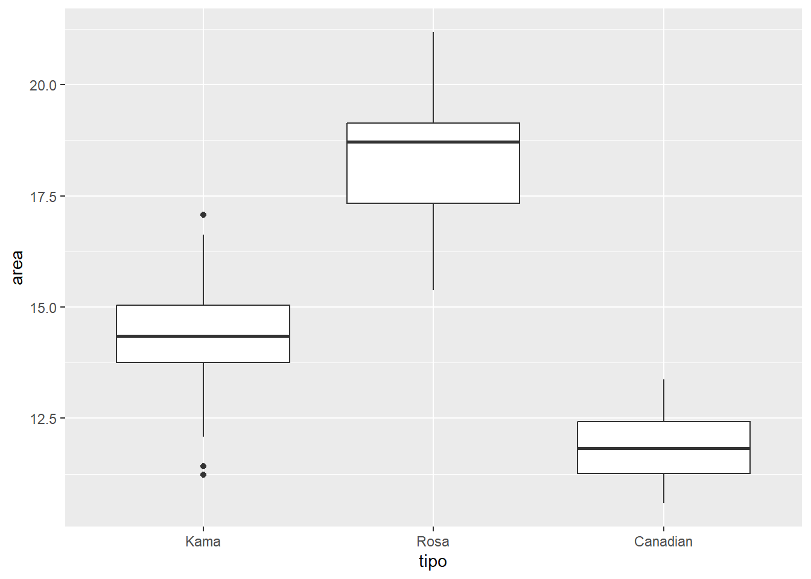
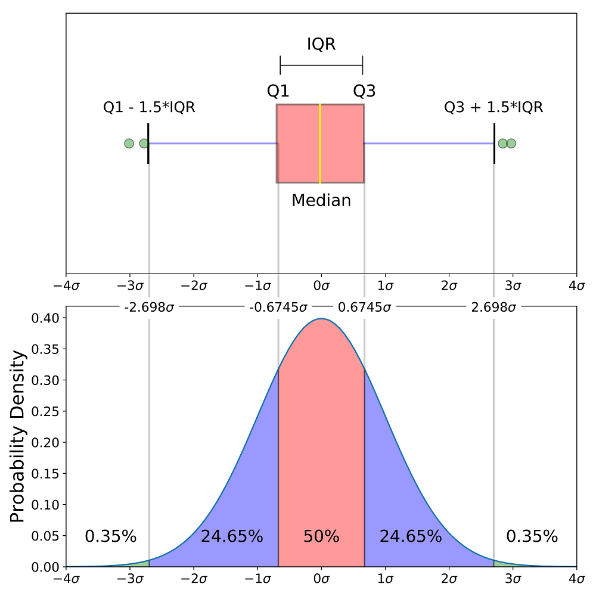

¿Cuantas filas y cuantas columnas tiene el dataframe df_seeds?
Respuesta:
# Cantidad de filas = nrow(df_seeds)print(paste("El dataframe tiene", nrow(df_seeds), "Filas"))
[1] "El dataframe tiene 210 Filas"
# Cantidad de columnas = ncol(df_seeds)print(paste("El dataframe tiene", ncol(df_seeds), "Columnas"))
[1] "El dataframe tiene 8 Columnas"
PREGUNTA 2
Vamos a convertir en factor la columna tipo. Vamos a reemplazar los números por su correspondiente etiqueta (label). La correspondencia entre el código y el tipo es:
1 - Kama
2 - Rosa
3 - Canadian
Convierte en factor la columna tipo, respetando las etiquetas:
Respuesta:
df_seeds$tipo <-factor(df_seeds$tipo,levels=c("1", "2", "3"),labels=c("Kama","Rosa","Canadian"))# sumary: nos da un resumen de todas las columnas. # Si es factor, solo nos cuenta el numero de entradas de ese valor.# Si es una variable numerica, nos da ciertos estimadores estadisticos como la media, mediana y cuariles, el minimo, el maximo. # De esta manera nos hacemos una idea de como se distribuyen los valoressummary(df_seeds)
area perimetro compacto longitud
Min. :10.59 Min. :12.41 Min. :0.8081 Min. :4.899
1st Qu.:12.27 1st Qu.:13.45 1st Qu.:0.8569 1st Qu.:5.262
Median :14.36 Median :14.32 Median :0.8734 Median :5.524
Mean :14.85 Mean :14.56 Mean :0.8710 Mean :5.629
3rd Qu.:17.30 3rd Qu.:15.71 3rd Qu.:0.8878 3rd Qu.:5.980
Max. :21.18 Max. :17.25 Max. :0.9183 Max. :6.675
anchura coeficient.asimetria longitud.ranura tipo
Min. :2.630 Min. :0.7651 Min. :4.519 Kama :70
1st Qu.:2.944 1st Qu.:2.5615 1st Qu.:5.045 Rosa :70
Median :3.237 Median :3.5990 Median :5.223 Canadian:70
Mean :3.259 Mean :3.7002 Mean :5.408
3rd Qu.:3.562 3rd Qu.:4.7687 3rd Qu.:5.877
Max. :4.033 Max. :8.4560 Max. :6.550
PREGUNTA 3
¿Cual es la media del area de cada uno de los tipos?
Respuesta
# tengo el dataframe df_seeds, lo agrupo por cada tipo, con esto tenemos una salida por cada tipo, con summarize le digo que agrupe y lo deje en una sola salida, se crea la variable media_area con la media del area, redondeada a dos decimales# |> concatena funciones df_seeds |>group_by(tipo) |>summarize(media_area=round(mean(area),2))
# A tibble: 3 × 2
tipo media_area
<fct> <dbl>
1 Kama 14.3
2 Rosa 18.3
3 Canadian 11.9
PREGUNTA 4
¿Como se llama el siguiente tipo de gráfico?. ¿Qué representa la línea del centro de la caja?
ggplot(data = df_seeds,# Elementos estéticosmapping =aes(x = tipo, y = area)) +# para hacer el boxplot, agregamos una geometría con este mismo nombregeom_boxplot()

Respuesta:
¿Como se llama el siguiente tipo de gráfico?: Gráfico o diagrama de cajas o boxplot.
¿Qué representa la línea del centro de la caja?: Esta línea representa la mediana, ésta diría hasta que punto de toda la columna o de toda la variable se acumula el 50% de mínimo a máximo, mas tecnicamente, esta línea sería Q2 que representa El 50% de las muestras y se encuentran por debajo del segundo cuartil

PREGUNTA 5
¿Como pintarías un diagrama de puntos (o scatterplot) con ggplot con las siguientes características?
En el eje X la variable compacto
En el eje Y la variable area
Cada tipo de semilla debería tener un color diferente
Respuesta:
ggplot(data = df_seeds,# Elementos estéticosmapping =aes(x = compacto,y = area,# relleno para pintar de color diferente las distintas especiescolor = tipo)) +# esta geometria me va a pintar los puntos diferenciando un color por cada tipo de semillageom_point()
Crea una nueva columna en el dataframe, o concatena con el operador |>, la columna se llama “is_kama”, donde las especies que sean de tipo Kama, les va a colocar True, de lo contrario van a tener False
PREGUNTA 7
Vamos a dividir el conjunto de datos en test y training porque vamos a entrenar un modelo que me permita diferenciar si una semilla es de tipo Kama o no. ¿Por qué es aconsejable dividir el dataset en los grupos de train y test?
# Este set.seed hace que a todos nos generen los mismos número aleatoriosset.seed(123) # me crea una serie de indices para trainingidx <-sample(1:nrow(df_seeds), 0.7*nrow(df_seeds))df_seeds_train <- df_seeds[idx,]df_seeds_test <- df_seeds[-idx,]
Respuesta:
¿Por qué es aconsejable dividir el dataset en los grupos de train y test?
Cuando creamos un modelo de Machine Learning es muy aconsejable dividir los datos en dos grupos, uno de training y otro de testing:
Con training entrenamos el modelo: Se asignan entre el 70% y 80% de los datos que se utilizará para entrenar el modelo. Lo llamaremos datafrane de training.
Con testing hacemos los test: Se asigna entre el 30% y 20% de los datos, lo utilizaremos para evaluar la calidad del modelo, estos son datos que no ha visto nuestro modelo y por tanto nos nuestra como de bien o mal predicirá con datos nuevos.
Nota: Para evaluar como funciona un modelo, no se pueden usar muestras usadas para entrenar el modelo, ya que de esta manera los resultados son contaminados y no nos va a dar un resultado óptimo
PREGUNTA 8
Vamos a crear un modelo para realizar una clasificación binaria, donde le pasaremos como entrada las columnas: area, perimetro, compacto, longitud, coeficient.asimetria y longitud.ranura
¿Qué tipo de algoritmo o modelo debería usar?
Respuesta:
¿Qué tipo de algoritmo o modelo debería usar?
El modelo que debemos usar es regresión logistica binominaria ya que en lugar de realizar una predicción de un valor queremos hacer un clasificador
# Datos de entradadf_seeds_clas_bin <- df_seeds[,c("area", "perimetro", "compacto", "longitud", "coeficient.asimetria", "longitud.ranura")]
PREGUNTA 9
Crea un modelo que me permita clasificar si una semilla es de tipo Kama o no con las siguientes columnas: area, perimetro, compacto, longitud, coeficient.asimetria, longitud.ranura
df_seeds_train <- df_seeds[itrain,]df_seeds_testing <- df_seeds[-itrain,]model <-glm(df_seeds_train, formula = is_kama ~ area + perimetro + compacto + longitud + coeficient.asimetria + longitud.ranura, family ='binomial')summary(df_seeds_train)
area perimetro compacto longitud
Min. :10.59 Min. :12.41 Min. :0.8081 Min. :4.899
1st Qu.:12.27 1st Qu.:13.45 1st Qu.:0.8569 1st Qu.:5.262
Median :14.36 Median :14.32 Median :0.8734 Median :5.524
Mean :14.85 Mean :14.56 Mean :0.8710 Mean :5.629
3rd Qu.:17.30 3rd Qu.:15.71 3rd Qu.:0.8878 3rd Qu.:5.980
Max. :21.18 Max. :17.25 Max. :0.9183 Max. :6.675
anchura coeficient.asimetria longitud.ranura tipo is_kama
Min. :2.630 Min. :0.7651 Min. :4.519 Kama :70 FALSE:140
1st Qu.:2.944 1st Qu.:2.5615 1st Qu.:5.045 Rosa :70 TRUE : 70
Median :3.237 Median :3.5990 Median :5.223 Canadian:70
Mean :3.259 Mean :3.7002 Mean :5.408
3rd Qu.:3.562 3rd Qu.:4.7687 3rd Qu.:5.877
Max. :4.033 Max. :8.4560 Max. :6.550
is_kama.n
Min. :0.0000
1st Qu.:0.0000
Median :0.0000
Mean :0.3333
3rd Qu.:1.0000
Max. :1.0000
summary(df_seeds_train)
area perimetro compacto longitud
Min. :10.59 Min. :12.41 Min. :0.8081 Min. :4.899
1st Qu.:12.27 1st Qu.:13.45 1st Qu.:0.8569 1st Qu.:5.262
Median :14.36 Median :14.32 Median :0.8734 Median :5.524
Mean :14.85 Mean :14.56 Mean :0.8710 Mean :5.629
3rd Qu.:17.30 3rd Qu.:15.71 3rd Qu.:0.8878 3rd Qu.:5.980
Max. :21.18 Max. :17.25 Max. :0.9183 Max. :6.675
anchura coeficient.asimetria longitud.ranura tipo is_kama
Min. :2.630 Min. :0.7651 Min. :4.519 Kama :70 FALSE:140
1st Qu.:2.944 1st Qu.:2.5615 1st Qu.:5.045 Rosa :70 TRUE : 70
Median :3.237 Median :3.5990 Median :5.223 Canadian:70
Mean :3.259 Mean :3.7002 Mean :5.408
3rd Qu.:3.562 3rd Qu.:4.7687 3rd Qu.:5.877
Max. :4.033 Max. :8.4560 Max. :6.550
is_kama.n
Min. :0.0000
1st Qu.:0.0000
Median :0.0000
Mean :0.3333
3rd Qu.:1.0000
Max. :1.0000
PREGUNTA 10
Si usamos un umbral de 0 en la salida del modelo (lo que equivale a probabilidad de 0.5 cuando usamos el predict con type=‘response’) ¿Cuales son los valores de precisión y exhausitividad?